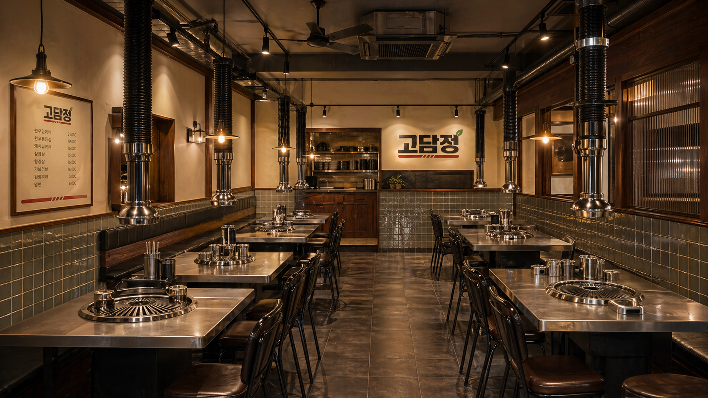
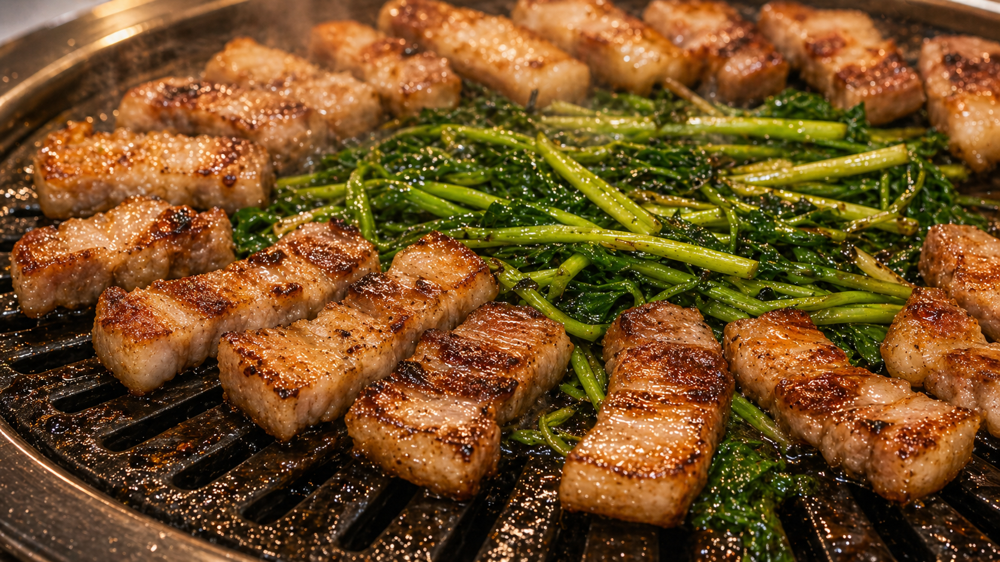

Brand Story
복고적인 간판, 따뜻한 매장,
기억나는 한 판.

타일과 스테인리스로 완성한 정육식당 무드
고담정은 과한 장식 대신 반복 가능한 소재로 브랜드를 만듭니다. 회색 사각 타일, 월넛 우드, 검정 금속, 스테인리스 테이블을 기준으로 어느 지점에서나 같은 인상을 남깁니다.
- 외관부터 보이는 입체 로고 간판
- 사진에 잘 잡히는 타일과 조명
- 지점 전개가 쉬운 모듈형 인테리어

Store Network
서울과 경기 생활권을 중심으로
확장되는 고담정.
아래 지점 수는 목업용 확장 현황 예시입니다. 실제 운영 페이지에서는 오픈 지점과 오픈 예정 지점을 구분해 신뢰감을 만들 수 있습니다.
서울18개 지점
경기 남부16개 지점
경기 북부10개 지점
인천·수도권8개 지점

Why Franchise
점주에게 필요한 건
멋보다 반복 가능한 기준.
간판 인지
굵은 로고와 빨간 밑줄로 야간 외관에서도 브랜드가 선명합니다.
메뉴 집중
삼겹살 한 판을 중심으로 촬영, 홍보, 주문 동선을 단순화합니다.
공간 표준
타일·우드·스텐 조합으로 작은 평수부터 중형 매장까지 확장합니다.
상권 대응
동네 상권, 오피스 상권, 주거 상권에 맞춰 좌석과 메뉴 구성을 조정합니다.
Franchise Inquiry
고담정 체인점 문의
희망 지역과 예상 평수를 남겨주시면 상권에 맞는 고담정 매장 모델을 제안합니다. 목업에서는 접수 폼 화면까지만 구현했습니다.
문의 접수
상권 검토
매장 모델 제안
개설 협의